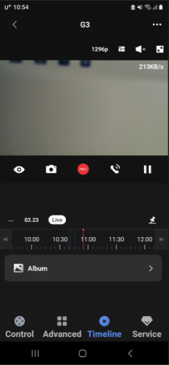

8 홈카메라 허브 G2H/G2H Pro
8.1 설치
질문 1: 홈카메라 허브 G2H/G2H Pro의 설치 방법을 알 수 있을까요?
답변 1:
홈카메라 허브 G2H/G2H Pro의 설치 영상과 매뉴얼은 아래 링크를 클릭하시면 보실 수 있습니다.
질문 2: G2H Pro는 어떻게 설치하나요? (물리적인 설치)
답변 2:
G2H Pro는 자석 흡착 및 평면 설치를 지원합니다. 비자성 재료 표면에 첨부물에 포함된 3M 접착제를 사용하여 철판을 부착하거나, 철판을 비자성 재료 표면에 고정하기 위해 고정 나사를 사용한 후 카메라를 고정할 수 있습니다.
8.2 사용팁
질문 1: 아카라 디바이스들을 스마트 카메라 허브 G2H Pro와 어떻게 연결하나요? 그리고 몇개의 아카라 디바이스들을 연결할 수 있는지요?
답변 1:
카메라 상단의 버튼을 세 번 빠르게 눌러 아카라 ZigBee 디바이스를 연결하실 수 있습니다. G2H Pro는 ZigBee 3.0 프로토콜을 지원하며 최대 128개의 아카라 Zigbee 디바이스를 연결할 수 있습니다.
질문 2: G2H Pro를 인터넷에 어떻게 연결하나요?
답변 2:
아카라홈 앱에서 생성된 QR 코드를 스캔하여 인터넷에 연결할 수 있습니다. 카메라 전원을 켠 후 앱을 열고 음성 안내에 따라 장치를 2.4GHz Wi-Fi에 연결하십시오. 그런 다음 QR 코드가 생성되고, G2H Pro 렌즈를 통해 네트워크 연결을 위해 QR 코드를 스캔할 수 있습니다.
질문 3: G2H Pro는 무슨 종류의 Wi-Fi에 연결 가능한가요?
답변 3:
G2H Pro는 2.4GHz IEEE902.11b/g/n Wi-Fi 프로토콜을 지원합니다. 그리고 5GHz Wi-Fi를 지원하지 않습니다. 혼합 주파수 라우터에 연결할 때, 비정상적인 연결을 피하기 위해 2.4GHz와 5GHz Wi-Fi를 분리하는 것이 권장됩니다.
질문 4: 하루 동안 영상을 저장하기 위해서 G2H Pro은 얼마만큼의 SD용량이 필요한지요?
답변 4:
하루 동영상을 저장하는 데 적어도 18GB가 소요됩니다. 일반적으로 512GB 용량의 TF 카드는 4주 동안, 총 28일 동안 저장될 것으로 예상됩니다.
질문 5: 인터넷이 끊겨도 G2H Pro는 영상을 SD카드에 저장하나요?
답변 5:
네 맞습니다. 그러나 인터넷이 없으므로 아카라홈 앱을 통해 동영상을 볼 수 없습니다.
질문 6: G2H Pro는 어떤 포맷의 SD카드를 지원하는지요?
답변 6:
이는 CLASS 4 이상 및 FAT32 형식을 지원하는 SD 카드를 지원합니다. 최대 용량은 512GB입니다. 그러나 CLASS 10 이상의 SD 카드를 사용하는 것이 좋습니다.
질문 7: 몇 명의 사용자가 동시에 G2H Pro 영상을 볼 수 있는지요?
답변 7:
네명의 사용자까지 동시에 영상을 보실 수 있습니다.
질문 8: G2H Pro는 몇개의 사용자 정의 벨소리를 업로드 할 수 있는지요? 사용자 정의 벨소리 당 최대 제한 크기는 얼마인가요?
답변 8:
최대 5개의 사용자 정의 , 사용자 정의 벨소리 당 최대 5MB까지 가능합니다.
질문 9: G2H Pro를 사용중인데, iCloud 저장을 어떻게 설정하나요?
답변 9:
iCloud를 통한 영상 저장의 경우, 다음과 같은 구성이 필요합니다.
- 애플 홈 허브(애플 TV, 홈팟) + iCloud 구독
추가로 아래의 설정이 필요합니다.
애플홈 앱의 G2H Pro 스트리밍 화명 상단의 [설정] 버튼 -> [녹화 옵션] -> 스트리밍 및 녹화 항목을 [스트리밍 및 녹화 허용]으로 설정해 주세요.
해당 설정후 G2H Pro 스트리밍 화면에 타임라인이 노출되며 움직임 감지시 영상이 저장되는 것을 확인 하실 수 있습니다.
질문 10: 타임랩스가 켜진 후 왜 영상이 저장 되지 않는지요?
답변 10:
중간 과정에서 네트워크 연결 끊김, 재설정 또는 공장 초기화 복구와 같은 작업이 없는지 확인해주세요.
질문 11: iOS 사용자는 사용자 정의 벨소리을 어떻게 업로드 하나요?
답변 11:
iOS 사용자는 먼저 사용자 정의 벨소리를 iCloud에 업로드한 다음 아카라홈 앱을 통해 사용자 정의 벨소리를 선택하고 카메라에 업로드해야 합니다.
질문 12: 사용자 정의 벨소리의 지원 포맷은 무엇인가요?
답변 12:
MP3 포맷만 지원합니다.
질문 13: G2H Pro가 지원하는 최대 Wi-Fi SSID와 패스워드 길이는 얼마인가요?
답변 13:
최대 32개의 ASCII 문자로 된 SSID와 최대 32개의 ASCII 문자로 된 비밀번호를 권장합니다.
질문 14: 클라우드 저장 내용과 SD카드 저장되는 영상은 항상 동일한 가요?
답변 14:
클라우드 저장과 SD카드 저장되는 영상은 별개 파일입니다. 상시 녹화시 SD카드에는 풀영상이 저장되고 클라우드에는 이벤트 발생시 약 12초의 영상만 저장됩니다.
질문 15: 앨범에 있는 스크린샷/비디오와 비디오 푸시는 SD카드 또는 휴대폰에 저장되는 것을 보여 주는지요?
답변 15:
아닙니다. 스크린샷/비디오와 비디오 푸시는 클라우드(서버)에 저장된 내용입니다.
만약에 휴대폰에 별도로 저장하기 위해서는 별도로 아래의 저장하기 버튼(카메라 아이콘 / REC 아이콘)을 누르셔야 합니다.

질문 16: 상시녹화 내용은 어디에서 확인 가능하나요?
답변 16:
상시 녹화 내용은 타임라인에서만 확인 가능합니다. 아니면 SD카드를 빼서 컴퓨터에 연결해서 확인 하셔야 합니다. 참고로, 1분 단위 파일로 나뉘어 저장됩니다.
질문 17: SD카드 사용시 클라우드 저장은 중단되는지요?
답변 17:
SD카드를 사용하셔도 클라우드 저장은 계속됩니다. 클라우드에는 이벤트 발생시 12초 가량의 영상이 저장됩니다.
질문 18: G2H Pro는 타임랩스 기능을 지원하는지요?
답변 18:
네, G2H Pro는 촬영한 동영상을 짧고 느리게 변화하는 비디오로 압축하여 “앨범-타임랩스”에 저장할 수 있는 기능인 타임랩스 기능을 지원합니다.
기기 설정 >> 주 설정 >> 타임랩스 >> 타임랩스 비디오를 활성화 시키시면 됩니다.
8.3 Troubleshoot
질문 1: Ark 기술이 무엇인지요?
답변 1:
Ark 기술은 아카라 스마트 홈 시스템의 분산형 다중 수준 지역화 재해 복구 기술입니다. 현재 Ark 기술은 2.0 버전으로 업데이트되었습니다. 이는 허브 로컬 자동화 기능, 다중 허브 대기 교체, 프록시 허브 재해 복구 등을 포함합니다. 클라우드 서버, 인터넷, 라우터, 허브가 오류가 발생할 때 이러한 문제에 대한 다중 수준의 재해 복구 보호 기능을 제공하여 로컬 자동화 및 시나리오 실행을 최대한 보장하고 아카라 스마트 홈 시스템의 신뢰성과 안정성을 향상시킵니다.
질문 2: 프록시 허브 재해 복구 기능은 무엇인지요?
답변 2:
아카라 허브 제품들(허브 M2, G2HPro, G3 등)이 오류가 발생하거나 전원이 꺼진 경우, 이들에 연결된 일부 Zigbee 장치는 “프록시 허브”로 작동할 수 있으며, “프록시 허브”는 일부 기본적인 로컬 자동화와 시나리오 실행을 담당합니다.
질문 3: 국내 출신된 제품 중 어떤 장치가 현재 프록시 허브로써 역할을 할 수 있습니까?
답변 3:
다음 제품이 프록시 허브 역할을 합니다.
LED 스트립 T1 (펌웨어 버전 0.0.0_2729 이상)
LED 스트립 드라이버 T1 (펌웨어 버전 0.0.0_0024 이상)
질문 4: 프록시 허브 재해복구 기능을 정상 동작하도록 하기위해서 필요 사항은 무엇인가요?
답변 4:
(1) 기기(허브, 프록시 허브, 다른 Zigbee 라우터를 포함)의 펌웨어를 최신 버전으로 업데이트해야 합니다.
(2) 프록시 허브 재해 복구 기술은 간단한 자동화 조건 및 동작만 지원할 수 있습니다(예: 장치의 전원 켜기/끄기 등).
질문 5: 어떤 경우에 G2H Pro은 Wi-Fi에 연결 될 수 없나요?
답변 5:
(1) 카메라가 2.4GHz Wi-Fi 네트워크에 연결되었는지 확인하십시오.
(2) Wi-Fi 이름이나 비밀번호에 특수 문자가 포함되어 있을 수 있습니다. 이를 일반 문자로 대체한 후 다시 시도하십시오.
(3) 카메라는 WAP/WAP2 Wi-Fi 네트워크를 지원하지 않습니다.
(4) 휴대폰에서 생성된 QR 코드를 카메라가 인식하지 못할 수 있습니다. 휴대폰의 화면이 4인치 이상인지 확인하고, 백라이팅 아래에서 QR 코드를 스캔할 수 없습니다.
(5) 공유기가 Wi-Fi 연결 감시기능을 켜 놓았는지 확인하십시오. 이로 인해 네트워크 연결이 실패할 수 있습니다.
(6) 공유기가 AP 격리 기능을 켜 놓았는지 확인하십시오. 이로 인해 휴대전화가 LAN 내에서 카메라를 찾을 수 없을 수 있습니다.
(7) 브릿지 네트워크에 연결하지 않는 것이 좋습니다.
질문 6: G2H Pro의 NAS 기능은 어떻게 사용하나요?
답변 6:
G2H Pro의 NAS 기능을 사용하려면 미리 Micro SD 카드를 카메라 E1에 삽입해야 합니다. 그러면 SD 카드 저장소 인터페이스에서 NAS 저장소 기능을 볼 수 있습니다.
우측 상단 ‘…’ 클릭하시고, “기기 설정” >> “주설정” >> “외장메모리 카드 설정” >> “NAS 네트워크 스토리지” >> ” 저장 장치 선택” 을 누르고 ID/Password를 입력하면 바로 연결됩니다.
질문 7: G2H Pro가 왜 자주 인터넷이 끊기는지요?
답변 7:
G2H Pro를 Wi-Fi 메시 네트워크의 물리적 중심에 배치하지 않고, Wi-Fi 신호가 너무 약한 곳을 피하십시오.
질문 8: 왜 알람 시스템 설정에서 움직임 감지 및 이상 소리 감지를 설정한 후에 알람이 작동하지 않을까요?
답변 8:
먼저 장치 추가 설정에서 이러한 기능을 활성화해야 작동합니다.
질문 9: G2H Pro의 적외선 설정이 자주 바뀌나요?
답변 9:
카메라가 쉽게 반사되는 물체를 향하지 않도록 해주세요.
질문 10: G2H Pro 영상 및 사진이 왜 흐리죠?
답변 10:
렌즈가 깨끗한지 확인해 주세요.